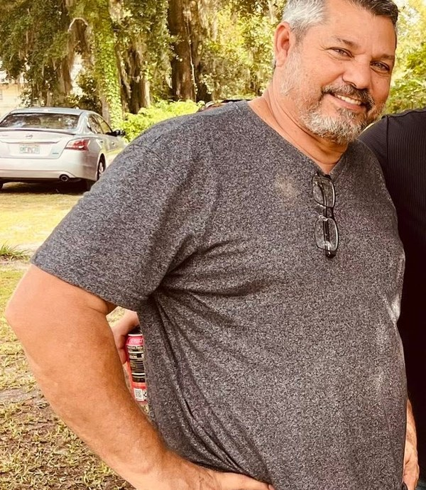

Yoslier Brache
Pastor principal
BIENVENIDOS A PENIEL
Una Iglesia · Un Mismo Propósito
BIENVENIDOS
Peniel es una Iglesia Bautista que busca glorificar a Dios y cumplir la misión de hacer discípulos, caminando juntos para guiar a otros a un encuentro con Jesús.
Esta página será nuestro punto de encuentro digital: un lugar para conocer nuestra iglesia, descubrir nuestros ministerios, aprender lo que creemos y encontrar maneras de participar. Conoce nuestra historia, los ministerios y las personas que sirven a nuestra comunidad.
Glorificar a Dios, haciendo discípulos, para juntos guiar a otros a un encuentro con Jesús.
Nuestra razón de ser
NUESTRA HISTORIA
Desde Ocala, Florida, Peniel ha crecido y extendido su visión más allá de sus propias paredes.
La Iglesia Bautista Peniel fue fundada en el año 2000 por el pastor Yoslier Brache, en la ciudad de Ocala, Florida.
Desde sus comienzos, la congregación ha experimentado un significativo crecimiento. Lo que comenzó con aproximadamente 50 miembros ha llegado a convertirse en una familia de más de 1,200 miembros.
Pero el crecimiento de Peniel no se ha limitado a su congregación local. Como expresión de su compromiso con la misión, la iglesia ha participado en la fundación de dos iglesias más: una en Colombia y otra en Argentina.
Esta historia refleja una iglesia que busca crecer en comunidad y, al mismo tiempo, llevar el mensaje de Jesucristo más allá de sus fronteras.
El pastor Yoslier Brache funda la Iglesia Bautista Peniel en Ocala, Florida.
La congregación inicia con aproximadamente 50 miembros.
Con el paso de los años, Peniel alcanza una membresía de más de 1,200 personas.
Peniel participa en la fundación de iglesias en Colombia y Argentina.
NUESTRA MISIÓN
Una iglesia, un mismo propósito.
QUIENES SIRVEN
Conoce al pastor y al equipo que sirve en la organización y administración de nuestra iglesia.
Pastor principal
Secretaria
Tesorera
Responsable de Proyectos
NUESTROS 5 MINISTERIOS
Los cinco ministerios de Peniel organizan áreas esenciales de servicio para cumplir nuestra razón de ser: glorificar a Dios, hacer discípulos y guiar a otros a un encuentro con Jesús.
MINISTERIO 01

Evangelismo y misiones
“Id por todo el mundo y predicad el evangelio a toda criatura.”
Marcos 16:15
Propósito: Alcanzar a los perdidos con el Evangelio de Jesucristo.
MINISTERIO 02
Formación bíblica y discipulado
“Y les enseñaba muchas cosas por parábolas...”
Marcos 4:34
Propósito: Formar creyentes maduros en la Palabra de Dios que vivan y compartan su fe.
MINISTERIO 03
Atención y servicio a la congregación
“Así que, de la manera que tuvimos oportunidad, hagamos bien a todos...”
Gálatas 6:10
Propósito: Servir a la congregación y a la comunidad demostrando el amor de Cristo en acción.
MINISTERIO 04
Unidad y vida congregacional
“Mirad cuán bueno y cuán delicioso es habitar los hermanos juntos en armonía.”
Salmo 133:1
Propósito: Fomentar la unidad, el amor fraternal y la vida congregacional en Cristo.
MINISTERIO 05
Alabanza y adoración a Dios
“Los verdaderos adoradores adorarán al Padre en espíritu y en verdad...”
Juan 4:23
Propósito: Glorificar a Dios en espíritu y en verdad por medio de la alabanza, la adoración y las artes.
OFICIALES Y SERVIDORES
La presentación de Peniel también contempla funciones administrativas y de apoyo que permiten cuidar los recursos, la comunicación y los proyectos de la iglesia.
Administración fiel de los recursos
Propósito: Administrar con fidelidad y transparencia los recursos que Dios provee para la obra de Su iglesia.
1 Corintios 4:2
Organización y comunicación eficiente
Propósito: Apoyar la vida de la iglesia mediante la organización, documentación y comunicación de sus actividades.
1 Corintios 14:40
Planificación y ejecución para la obra de Dios
Propósito: Identificar, planificar, coordinar y supervisar proyectos y mejoras de la iglesia que apoyen su misión y visión.
1 Corintios 14:33
SERVICIO A LA CONGREGACIÓN
Hermanos que sirven a nuestra comunidad de fe.
Diácono
Diácono
Diácono
Avatar provisionalDiácono
Avatar provisionalNUESTRA FE
Como iglesia bautista, nuestra identidad doctrinal está expresada en las Escrituras y en la Baptist Faith and Message 2000, que presenta principios sobre las Escrituras, Dios, el ser humano, la salvación, la iglesia, el bautismo y la Cena del Señor, evangelismo y misiones, entre otros temas.
Conocer la Baptist Faith and Message 2000 →ORGANIZACIÓN
La organización presentada por Peniel coloca al Pastor y al Concilio como parte del liderazgo que sirve y coordina los cinco ministerios de la iglesia.
APOYA NUESTRA MISIÓN
Si deseas contribuir voluntariamente a la obra y los ministerios de la Iglesia Bautista Peniel, puedes hacerlo a través de Zelle usando el correo electrónico registrado de nuestra iglesia.
«Dios ama al dador alegre». — 2 Corintios 9:7
En la aplicación de tu banco, selecciona Zelle y utiliza este correo como destinatario:
iglesiapenielocalafl@gmail.com
Conocer Zelle en su sitio oficial ↗Antes de confirmar cualquier transferencia, comprueba en tu banco que el destinatario corresponde a Iglesia Bautista Peniel. Las transferencias por Zelle pueden ser difíciles de revertir. Este sitio no procesa pagos ni solicita datos bancarios.
ESTAMOS PARA ESCUCHARTE
¿Necesitas oración, tienes una pregunta o deseas conocer nuestra iglesia? Escríbenos. Será un gusto escucharte.